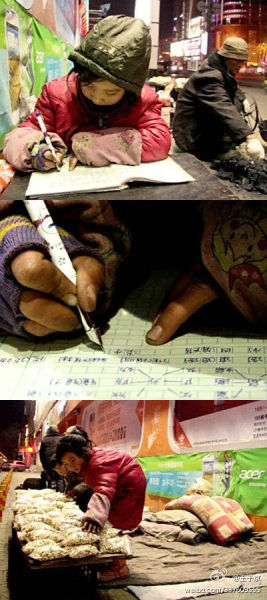

我家乡的孩子… 她以后能改变自己的命运吗？//@阿忆:穷人的好孩子! //@肖雪慧：帮帮这个在崛起大国里一个马路边路灯下做作业、卖爆米花的9岁小女孩。@王于京:【9岁女孩寒夜街头售爆米花 借路灯做功课】在河南平顶山平声影剧院门前，昏暗的路灯下，9岁的小女孩齐聪聪一会儿趴在马路边认真写作业，一会儿帮爷爷卖爆米花。女孩衣服满是污渍、手冻得红肿，但神情专注让人心疼。网页链接 PS:希望更多人碰见他们时能买包爆米花。 